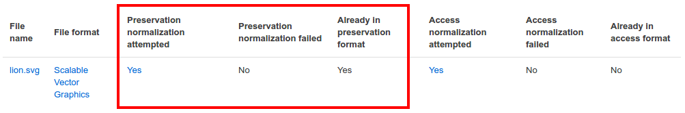
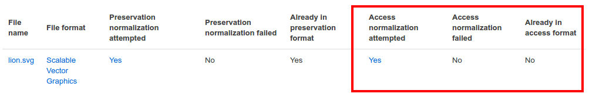

Archivematicaクイックスタートガイド¶
このガイドでは、Archivematicaの転送とインジェストのプロセスをテスト用に説明します。本ガイドは、Archivematicaを初めてお使いになる方、また、実際に試してみたい方を対象としています。完全なインストール手順については、 インストール を参照してください。このガイドを始める前に、 OAIS Reference Model について少し知っておくと、SIP、AIP、DIPという頭字語が理解できるようになります。
このガイドでは、標準的な転送で実行される基本的なアクションを説明し、Archivematicaの高度な機能については説明しません。より複雑なコンテンツの処理については、 ユーザーマニュアル を参照してください。以下の手順は、特に断りのない限り、SandboxとArchivematica仮想マシンの両方に適用できます。
このチュートリアルを終えるまでに、次のことができるようになります：
Archivematicaで標準転送を作成
転送先からAIPとDIPを作成
ファイルの識別を見直す
ファイルの正規化を見直す
Archivematicaパイプラインの自動化
このページでは：
タスク#0 - Archivematicaテストインスタンスをセットアップする¶
Archivematicaをフルインストールする環境がない場合、Archviematicaのサンドボックス、またはローカルにインストールされたArchivematica VMでテストできます。
サンドボックスの使用¶
Artefactualは、 Archivematica sandbox を以下の認証情報で管理しています：
ユーザー名：demo@example.com
パスワード：demodemo
サンドボックスは、Archivematicaの最新リリースを簡単にテストする方法として提供されています。ウェブサイトは、毎日自動的にリセットされます。作成したパッケージは永久に保存されません。また、同時に複数のデモユーザーがログインしている場合がありますので、ソフトウェアの使用中に他のユーザーによる変更が表示される場合があります。
デモサイトは、公開編集されており、モデレートされていません。セキュリティのため、テスト転送は Artefactual が提供するサンプルデータに限定されます。独自のデータを使用してテストしたいユーザーは、Vagrant ボックス (後述) をダウンロードして、ローカルでテストしてください。
注釈
サンドボックスを使用している場合は、タスク#1に進むことができます。
Vagrantを使って仮想マシンにインストール¶
警告
この仮想マシンは、生産環境での使用を想定していません。これは、開発者や経験豊富なユーザーがVagrantを使ってArchivematicaを試してみるためのものです。製造環境でArchivematicaを使い始める場合は、本マニュアルで説明する他のインストール方法を参照してください。
このガイドでは、コンピュータにArchivematicaがインストールされた新しいOracle VirtualBox 仮想マシンをセットアップします。このガイドは、MacOS X、Linux、Windows、FreeBSDなど、ほとんどのオペレーティングシステムで動作します。
最低システム要件 ：4GBのRAM、10GBのディスク容量。
VagrantとVirtualBoxをインストール¶
VirtualBoxをhttps://www.virtualbox.org/（またはパッケージマネージャーを使用）からインストールします。VirtualBox 5.2.18以降が必要です。
https://www.vagrantup.com/からVagrantをインストールします（またはパッケージマネージャを使います）。Vagrant 2.1.4以降が必要です。
起動¶
コンピュータのコマンドラインインターフェイスを使って、新しいディレクトリを作成し、それを開きます。場所は、重要ではありませんが、後でそのディレクトリに戻る必要があります- それ以降のコマンドライン操作はすべて、そのディレクトリの中から実行する必要があります。また、このディレクトリにいくつかのフォルダを追加すると、local-transfersで利用できるようになります。
mkdir archivematica-vagrant && cd archivematica-vagrant
カレントディレクトリをVagrant環境に初期化します。
vagrant init artefactual/archivematica
Vagrantを実行します（再度、Vagrantファイルを保存したディレクトリから実行します）。
vagrant up
Vagrantは、カスタムボックスをダウンロードし、VirtualBoxで起動します。ボックスはかなり大きい (約3.4 GB) ため、ダウンロードには、接続の速度に応じて、数分から1時間以上かかる場合があります。
これにはしばらく時間がかかります。お使いのコンピュータにもよりますが、1時間程度かかる場合もあります。Archivematicaのプロビジョニング中は、コンピュータの動作が非常に遅くなる可能性があります。Archivematicaのビルド中は、作業を保存し、コンピュータから離れるようにしてください。
プロビジョニングが完了したら、仮想マシンにログインできます：
vagrant ssh
これで、WebブラウザからArchivematicaインスタンスにアクセスできるようになります：
Archivematica： ` <http://10.10.10.20>`_ .ユーザー名：admin、パスワード：archivematica
Storage Service： ` <http://10.10.10.20:8000>`_ .ユーザー名：admin、パスワード：archivematica
タスク#1 - 標準的な転送を開始¶
転送とは、1つまたは複数のファイルをグループとして処理することです。転送元は、Archivematicaが接続されているストレージシステムであればどこでもかまいません。最初の転送を開始するには、Archivematicaの転送ダッシュボード（ Archivematica Sandbox またはArchivematica VMのメインページ）にアクセスします。ArchivematicaインスタンスのTransferタブをクリックしても、転送ページにアクセスできます。
転送プロセスは、一連のマイクロサービスで構成され、そのマイクロサービスは、ジョブで構成されています。
注釈
マイクロサービスとは、Archivematica内で特定の目標を達成するためのアクションのグループです。転送がArchivematicaの転送要件に準拠しているかどうかを確認するのもマイクロサービスです。
注釈
ジョブは、マイクロサービス内の個別のアクションです。転送の内容を処理ディレクトリに移動するのはジョブです。
マイクロサービス名をクリックすると、各マイクロサービスを展開できます。これにより、マイクロサービスを構成するすべてのジョブを見ることができます。各ジョブ名の右にある歯車のアイコンをクリックすると、コマンド情報を一覧表示する新しいウィンドウが開き、各ジョブのコマンドを見ることができます。 Show arguments をクリックすると、Archivematicaがジョブの実行に使用するpythonコマンドが表示されます。
ジョブが正常に完了すると緑色になり、失敗すると赤色になります。
ステップ：
転送タイプボックスで標準が選択されていることを確認してください。
転送先の名前を入力してください（何でもかまいません）。
閲覧をクリックして、利用可能なコンテンツを確認します。 必ずフォルダーアイコンをクリックしてディレクトリ ツリーを展開してください。
SampleTransfers内の images ディレクトリを見つけ、Addをクリックします。
選択したディレクトリが選択ボックスの下に表示されます。
緑色の Start transfer ボタンをクリックして転送を開始します。
プロンプトが表示されたら、好きなように決定してください。ただし、転送を止めるようなもの（つまり、"Reject"と表示されているもの）は選択しないでください。決定ポイントの詳細については、 転送タブの文書 を参照してください。
Identify file format マイクロサービスに到達したら、いったん中断して次のセクションを読んでください。
ファイルフォーマットの見直し¶
すべてのジョブのコマンドを参照する必要はありませんが、 Identify file format マイクロサービスの出力を見てみることをお勧めします。Archivematicaの最も重要な仕事の一つは、ファイル形式を特定し、そのファイルを可能な限り保存することです。
ステップ：
プロンプトが表示されたら、「はい」を選択してファイルフォーマットを識別します。
ファイルフォーマットの識別が完了したら、ジョブ名の右側にある歯車のアイコンをクリックしてジョブページを開きます。
ジョブページのSTDOUTという見出しの下に、以下のような情報が表示されます：
IDCommand UUID: 8cc792b4-362d-4002-8981-a4e808c04b24
File: (9305a71e-5180-4c49-b93e-c934d7a433dc) /var/archivematica/sharedDirectory/currentlyProcessing/demo-test-f706d98d-faa6-450f-92c7-b608f1106f2e/objects/pictures/MARBLES.TGA
fmt/402
Command output: fmt/402
/var/archivematica/sharedDirectory/currentlyProcessing/demo-test-f706d98d-faa6-450f-92c7-b608f1106f2e/objects/pictures/MARBLES.TGA identified as a Truevision TGA Bitmap 2.0
以上のことから、ファイルMARBLES.TGAは、Truevision TGA Bitmap 2.0として識別されました。Archivematicaは、 PRONOM （英国国立公文書館が管理する技術情報のレジストリ）を使用してファイルを識別し、正規化、特性化、その他のファイル操作イベントを通知します。Archivematicaは、Truvision TGA Bitmap 2.0のPRONOMフォーマット識別子である fmt/402 （フォーマット402）としてTGAファイルを識別します。転送の各アイテムには、同様のSTDOUTセクションがあるはずです。
Archivematicaはバックグラウンドで転送処理を続行します。 Create SIP from Transfer microservice に到達したら、次のセクションをお読みください。
SIPの作成¶
Transferタブの最後のマイクロサービスは、 Create SIP from Transfer です。最後のジョブである Create SIP（s） は、インジェストタブに直接進むか、転送をバックログに送ることができます。バックログについての詳細は、 バックログ文書 を参照してください。
ステップ：
プロンプトが表示されたら、 「Create single SIP and continue processing」（単一のSIPを作成し、処理を続行する）を選択します。 。
タスク#2 - AIPとDIPを作る¶
Archivematicaの主な機能は、SIPからArchival Information Packages（AIP）とDissemination Information Packaes（DIP）を作成することです。先ほど転送タブでSIPを作成しました。インジェストタブでは、AIPとDIPを作成するマイクロサービスを実行します。
ステップ：
インジェストタブをクリックします。
必要に応じて決定してください（繰り返しますが、"Reject"と書かれたものは選択しないでください）。インジェスト中に表示される決定ポイントの詳細については、 インジェストタブ文書 を参照してください。
[正規化]の決定ポイントまで来たら、一旦立ち止まって次のセクションを読んでください。
正規化¶
インジェストも転送と同様、一連のマイクロサービスで構成されています。インジェスト中に行われる最も重要なマイクロサービスはNormalizeです。Normalizationは、デジタルコンテンツを長期保存（AIPの場合）やアクセス（DIPの場合）に適した形式に変換するプロセスです。Normalizationマイクロサービスに到達すると、コンテンツをどのように正規化するかを決定するプロンプトが表示されます。
ステップ：
プロンプトが表示されたら、 Normalize for preservation and access を選択します。このオプションを選択すると、ArchivematicaにSIPのコンテンツの保存用コピー（AIP）とアクセス用コピー（DIP）を作成することを知らせます。
正規化が完了すると、正規化を承認するよう促されます。承認を選択する前に、ドロップダウンメニューの隣にある小さなページアイコンをクリックしてください。
正規化レポートは、別タブで開きます。このレポートの読み方については、以下に記載されています。
メインタブで、ページ上部の「Preservation Planning」タブをクリックします。Preservation Planningタブが開いたら、"SVG"（またはレビューしたいファイル形式）を検索します。ファイル形式名をクリックします。
「正規化レポート」と「保存計画」の2つのタブが開いているはずです。正規化レポートに戻り、次の2つのセクションを確認してください。
保存のための正規化の見直し¶
正規化レポートは、SIPのコンテンツで正規化が試みられたかどうかを詳細に示します。このスクリーンショットは、Scalable Vector Graphicとして識別されたlion.svgのレポートを示し、保存の列が強調表示されます。
{kind=link}

SVGを検索した保存計画タブに戻ると、SVGファイルは保存フォーマットとみなされていることがわかります。したがって、正規化レポートには次のことが示されます：
保存の正規化が試みられました。
保存の正規化は失敗しませんでした。
画像はすでに保存フォーマットになっていました。
本質的に、これは保存の正規化が開始されたことを意味しますが、Archivematicaはファイルがすでに保存フォーマットであることを認識したため、アクションは実行されませんでした。
アクセス正規化の見直し¶
このスクリーンショットは、アクセス列が強調表示されたlion.svgのレポートを示しています。
{kind=link}

アクセスの正規化については、以下のように報告されています：
アクセスの正規化が試みられました。
アクセスの正規化は失敗しませんでした。
画像はアクセスフォーマットできませんでした。
このことが lion.svgにとって何を意味するのかを確認するために、保存計画タブをもう少し詳しく見ていきます。
ステップ：
保存計画タブに戻る。
下にスクロールし、左側のサイドバーにある 正規化 セクションを見つける。 ルール をクリックしてください。
"Scalable Vector Graphics"（または解析するファイル形式）を検索します。
結果は、SVGファイルに対するアクセスと正規化のルールを示しています。Command列では、SVGの優先アクセス形式がPDFであることがわかります。Archivematicaは、このルールに従ってアクセスコピーを作成するため、正規化レポートから、SVGファイルのPDFコピーがDIP用に正常に作成されたことが推測できます。これを確認するには、 Normalize for access ジョブのコマンド出力をチェックするか（上記の Identify file format のコマンド出力をチェックした方法と同様）、DIPが保存されたらそれを確認します。
インジェストの処理を続け、AIPとDIPの決定ポイントに達したら止めます。
タスク#3 - AIPとDIPの保管¶
Archivematicaはパッケージを作成するためのツールです。生産環境では、ストレージは、Archivematicaの外部で、ユーザーや機関が選択したストレージシステムに保存されますが、このデモでは、AIPとDIPをArchivematicaのデフォルトの内部ストレージに保存します。
AIPは、常に最初に保管すべきです。パッケージが小さいため、DIP の保管オプションは、通常最初に表示されるため、すぐに保管したくなります。しかし、AIPに何か問題が起きた場合、DIPを保管システムやアクセスシステムから削除しなければなりません。AIPを最初に処理することで、AIPが安全であることを認識しながらDIPを保管し、アクセスできるようになります。
ステップ：
Store AIP と Upload DIP マイクロサービスがあなたに決定ポイントを促すまで、インジェストを処理します。
Store AIP ドロップダウンから"Store AIP"を選択します。
しばらくすると、AIPの保存場所を選択する別の決定ポイントが表示されます。選択肢は1つだけ - "Store AIP in standard Archivematicaディレクトリ"だけです。このオプションを選択します。
AIPが正常に保存されたら、DIPの処理に移ります。ローカルにインストールされたArchivematica VMもSandboxもアクセスシステムに接続されていないため、 Upload DIP で、"Store DIP"を選択します。
DIPの保存場所を選択するプロンプトが表示されます。"Store DIP in standard Archivematica directory"オプションは1つだけです。このオプションを選択します。
これでAIPとDIPがArchivematicaの内部ストレージに保存されました。これでArchivematicaのワークフローは完了です！
タスク#4 - AIPとDIPを見直す¶
AIPとDIPが保存されたので、見直すことができます。
AIPを見直す¶
ステップ：
Archival Storageタブをクリックします。検索結果にAIPが表示されるはずですが、表示されない場合は、タスク#1で付けた名前を使用して検索できます。
使用しているArchivematicaのバージョンに応じて、AIP の名前をクリックすると、AIPの詳細ページが開くか、AIPがすぐにダウンロードされます。AIPの詳細ページが表示されたら、[ダウンロード]ボタンをクリックします。
ダウンロードが完了したら、AIPを開きます。コンピュータにインストールされている7zipファイルを開くことができるプログラムを使用する必要があります。必要であれば、こちらから7Zipをダウンロードできます：https://www.7-zip.org/download.html
AIPを解凍したら、オブジェクトディレクトリが見つかるまでフォルダを移動します。このディレクトリには、転送したオリジナル画像と保存用コピーが含まれています。Objectsディレクトリのファイル形式を、Preservation Planningタブのルールと比較できます。
METSファイルが見つかるまでフォルダを移動し、ウェブブラウザまたはテキストエディタで開きます。タイトルは、"METS.7e58760a-e357-4165-9428-26f5bb2ba8ee.xml"のようになります。
METSの<mets:fileSec>タグを見つけます。fileSecの中で、オリジナル転送の各アイテムに関する情報を見つけることができるはずです - これらは、<mets:fileGrp USE="original">というタグが付けられたセクションにあります。下にスクロールすると、各保存コピーの補足情報を見ることができます。これは、<mets:fileGrp USE="preservation">というタグの付いたセクションにあります。
METS.xmlファイルは、お使いのファイルに関するすべての情報と、それらのオリジナルファイルに作用したプロセスやツールに関する情報が含まれているため、非常に長いファイルです。METSファイルの内容と構造の詳細については、メタデータセクションの METSページ を確認してください。
DIPの見直し¶
注釈
このセクションはVMを使用している場合にのみ適用されます。Archivematicaサンドボックスでは、Storage Serviceにアクセスできません。
ステップ：
DIPを取得するには、Archivematica Storage Serviceにアクセスする必要があります。Archivematica VMのURLの末尾に":8000"を追加します（例：http://10.10.10.20:8000/）。
ストレージサービスで、Packagesタブをクリックします。
ページの右端に検索ボックスがあります。タスク#1で付けた名前を入力してDIPを検索します。
2つの結果が表示されるはずです。ひとつは自分のAIPで、もうひとつはDIPです。"Type"欄に表示されています。
どのファイルがDIPであるかを確認したら、"Download"をクリックします。
ダウンロードが完了したら、DIPを開きます。コンピュータにインストールされているtarファイルを開くことができるプログラムを使用する必要があります。前述の7ZipでTARファイルを開くことができます：https://www.7-zip.org/download.html
DIPを解凍したら、objectsディレクトリを開きます。このディレクトリには、オリジナル画像から派生したアクセスコピーが含まれています。objectsディレクトリ内のファイル形式を、[Preservation Planning]タブのルールと比較できます。
DIPにはサムネイルディレクトリもあり、画像の小さなJPGバージョンがあります。画像がJPGに変換できなかった場合（SVGファイルの場合）、代わりに一般的なアイコンが含まれます。
タスク#5 - コンフィギュレーションによるワークフローの自動化¶
Administrationタブをクリックすると、Archivematicaの処理設定画面が表示されます。ステップ1からステップ3で実行したArchivematicaのテスト中に発生した各デシジョンポイントをこのページで自動化できます。これは、デシジョンポイントに遭遇するたびに同じデシジョンを行うことがわかっている場合に使用します。
ステップ：
[管理]タブをクリックします。「default」と呼ばれる単一の処理設定が表示されます。
さまざまなオプションを検討し、好きなように変更してください。オプションは、以前のタスクで行った決定ポイントから認識できます。
たとえば、いつも同じ圧縮ツールを使い、いつも同じ割合でパッケージを圧縮したいので、圧縮アルゴリズムと圧縮レベルを自動化したいと思うかもしれません。圧縮関連の処理設定を行うには、次のことを行います：
Select compression algorithm の横にあるチェックボックスをオンにします。
右側のドロップダウンを使って、圧縮アルゴリズムを選択します。 7z using bzip2 が最も一般的です。
の横にあるチェックボックスをオンにする圧縮レベルを選択
右側のドロップダウンを使って、圧縮レベルを選択します - 5 - 通常の圧縮モード 速度とサイズのバランスが取れています。
処理設定を設定する前に、Archivematicaでいくつかのテストを実行することをお勧めします。Archivematicaに慣れてくると、どのような判断を何度も繰り返しているかが分かってきます。これらは、処理設定による自動化に最適です。
Archivematicaを使いこなすためのその他の方法¶
このチュートリアルでは、Archivematicaの非常に基本的なワークフローについて説明します。より複雑なコンテンツの処理については、 ユーザーマニュアル を参照してください。